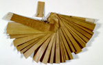

Rerajahan. Oud-Javaans. Handschrift op palmblad, 36 ff., 40 x 230 mm. Lombok, tweede helft van de negentiende eeuw. -- (Or. 5294)
Dit handschrift vol magische figuren in mens- en diervorm is een modellenboek voor een ‘balian’, een Balinese tovenaar, waarin hij de afbeeldingen kan vinden die hij in bepaalde omstandigheden op amuletten voor zijn cliënten moet aanbrengen. In sommige gevallen staan de spreuken die hij bij het maken van zijn amuletten moet uitspreken erbij. De taal van deze ‘mantra’s’ is Oud-Javaans. Het boek bevat tevens instructies voor zowel defensieve als agressieve magie. Het is afkomstig van de Balinese bevolkingsgroep op West-Lombok.
Het palmblad waarop dit handschrift is geschreven, is enkelvoudig, met de nerf er nog aan. Het later toegevoegde topblad is dubbelvoudig en bevat een opgave van de inhoud. Op het eveneens later toegevoegde kleine stukje palmblad staat de omvang van het oorspronkelijke boek vermeld: vijfendertig bladen. Tekst en tekeningen zijn met een schrijfmes ingekrast in de bovenste laag van het palmblad. Daarna is deze bovenlaag gezwart met roet, en vervolgens weer schoongewreven. Het zwartsel blijft dan in de groeven achter. Het handschrift bevat onder meer:
- folio 4: hond met een slang uit zijn bek. Dit is een tovertekening die moet worden geschreven op een gevlekt blad en dient om een erf te beschermen tegen vijanden;
- folio 12: Taya Panulah, de hoogste god die afweert. Hij is afgebeeld als een hermafrodiet. Hij heeft geen benen, als handen dienen hem twee hoofdjes, die ook hoofden van Taya voorstellen. Hij steunt op een tweekoppige slang. De tekening moet worden gemaakt op een stuk sandelhout, dat vervolgens moet worden begraven. Vijanden worden hierdoor van de wijs gebracht;
- folia 23 en 24: mansfiguur, die staat op een vis-olifant, en mansfiguur met kroon, die staat op een soort draak. De eerste is de god Mina Asmara. Dit figuur moet op een stukje bladgoud geschreven worden en verleent grote toverkracht aan de drager van de amulet. De tweede is de god Baya Asmara. Zijn afbeelding kan men op elke soort van dun metalen plaatjes schrijven. Deze dienen als amulet en verlenen kracht tegen vijanden.
Literatuur
- Theodore G.Th. Pigeaud, Literature of Java. Catalogue raisonné of Javanese manuscripts in the Library of the University of Leiden and other public collections in The Netherlands. Vol. II: Descriptive lists of Javanese manuscripts. Lugduni Batavorum 1968 ( = Bibliotheca Universitatis Leidensis. Codices manuscripti. X), p. 298.
- C. Hooykaas, Tovenarij op Bali. Magische tekeningen. Amsterdam 1980.
| vorige pagina | top pagina |